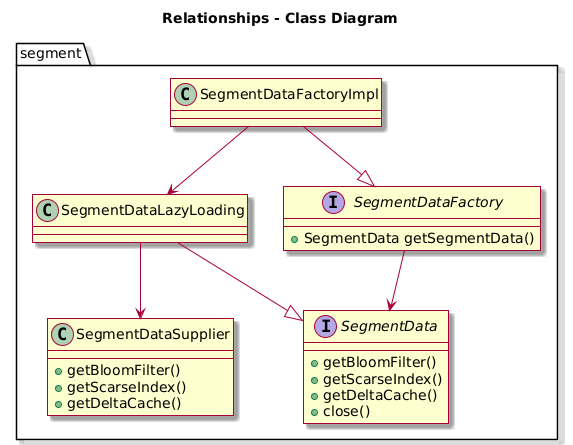
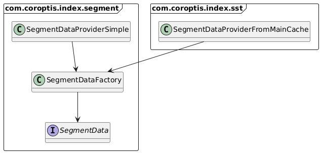
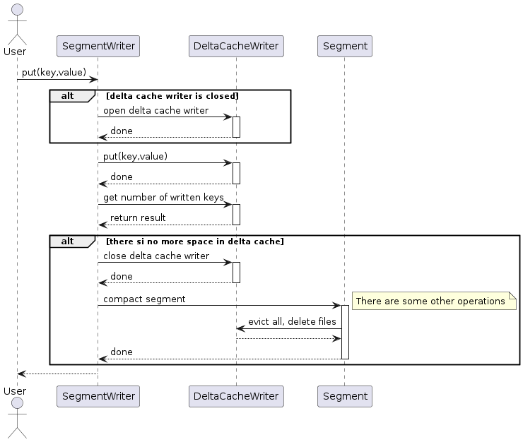

Segment implementation
Segment is core part of index. It represents one string sorted table file with:
- Partial consistency - iterator stop working or return consistent data
- Support Writing changes into delta files
- Bloom filter for faster evaluating if key is in index
- Scarce index for faster searching for data in main index
Segment put/get and iterate consistency
operations like write and get should be always consistent. What is written is read. Iteration behave differently. better than provide old data it stop providing any data.
Let's have a followin key value pairs in main index:
In segment cache are following pairs:
When user will iterate throught segment data, there will be followin cases:
Case 1 - Read data
Case 2 - Change data
Any segment write operation will break segment iterator. It's easier way to secure segment consistency.
Caching of segment data
In segment following object are cached:
- SegmentDeltaCache - contains changed key value pair from segment
- BloomFilter - bloom filter data
- ScarceIndex - scarce index data
There are few classes that provide lazy loading of segment data a flexibility to cache segment data. Segment data are managed by following classes:

Object SegmentData could contains objects SegmentDeltaCache, BloomFilter and ScarceIndex. All of them are lazy loaded by SegmentDataSupplier. For closer class description look at source code.
The following image shows that SegmentDatafactory can be referenced from SegmentDataProviderSimple, which is the simplest implementation that merely holds segment data from the factory. The class SegmentDataProviderFromMainCache interacts with the main index cache where the segment data is stored. Data may be evicted from the cache without any notification.

Writing to segment
Opening segment writer immediatelly close all segment readers. When writing operation add key that is in index but is not in cache this value will not returned updated.
Putting new pair into segment is here:
